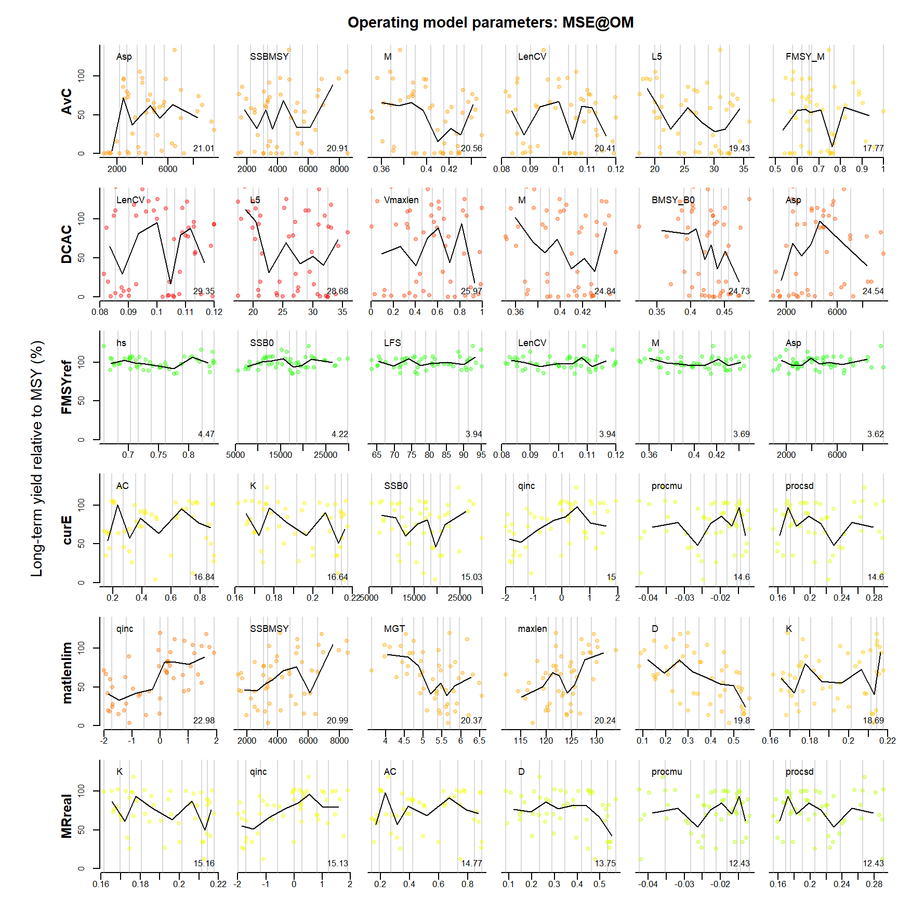
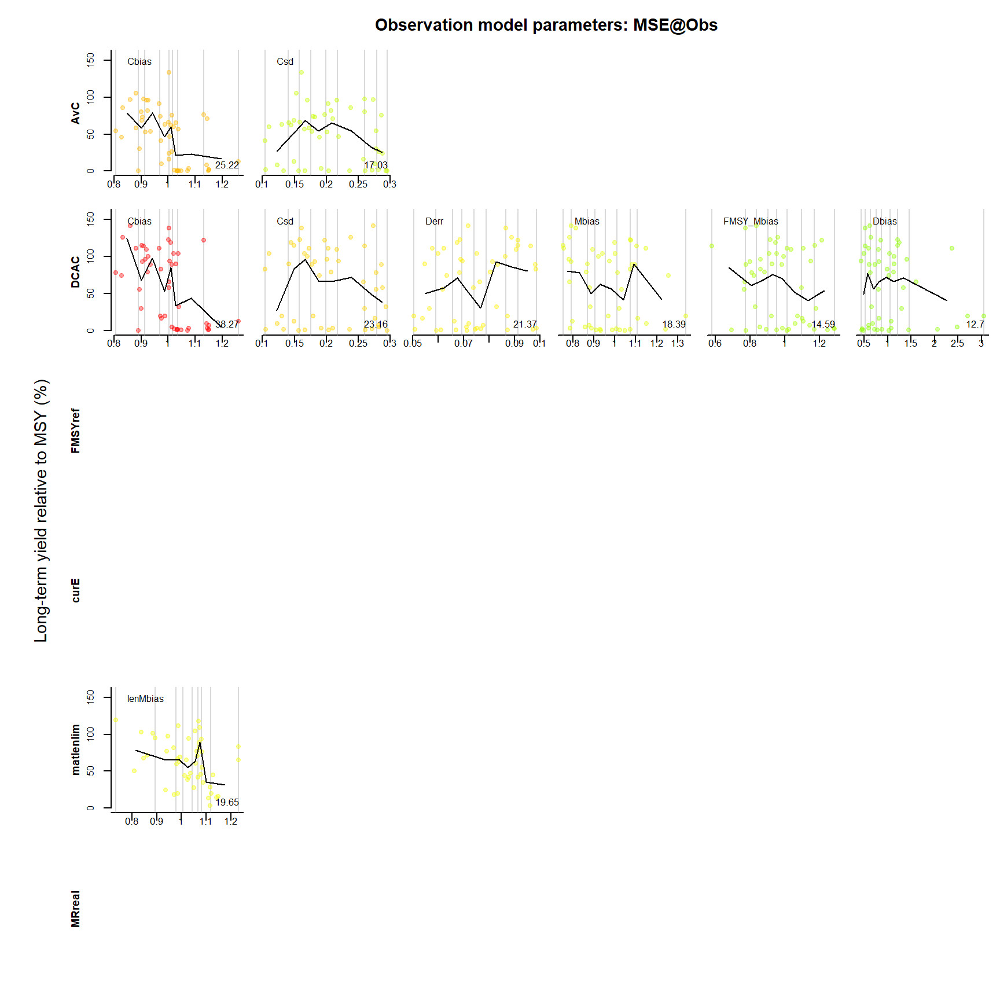
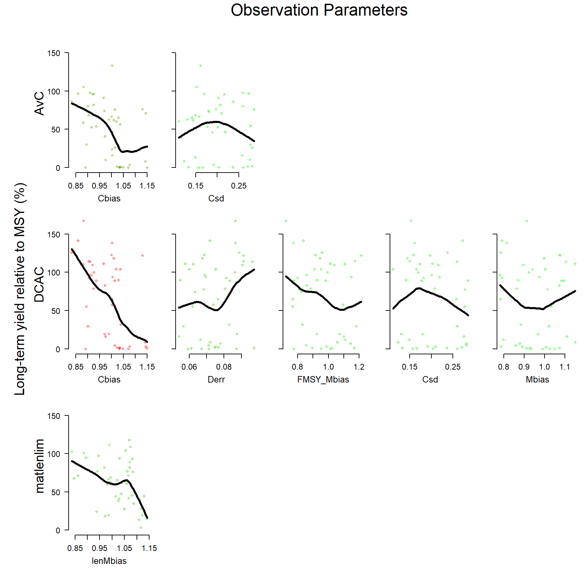
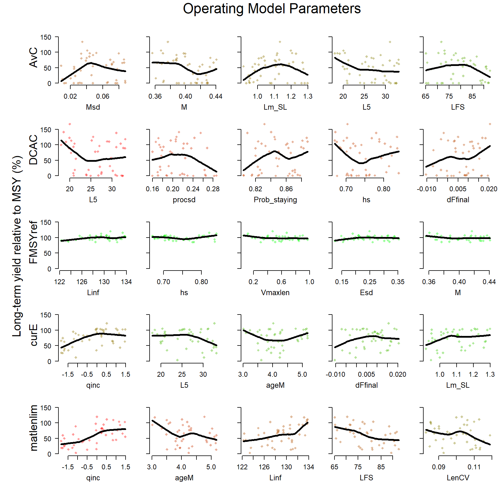
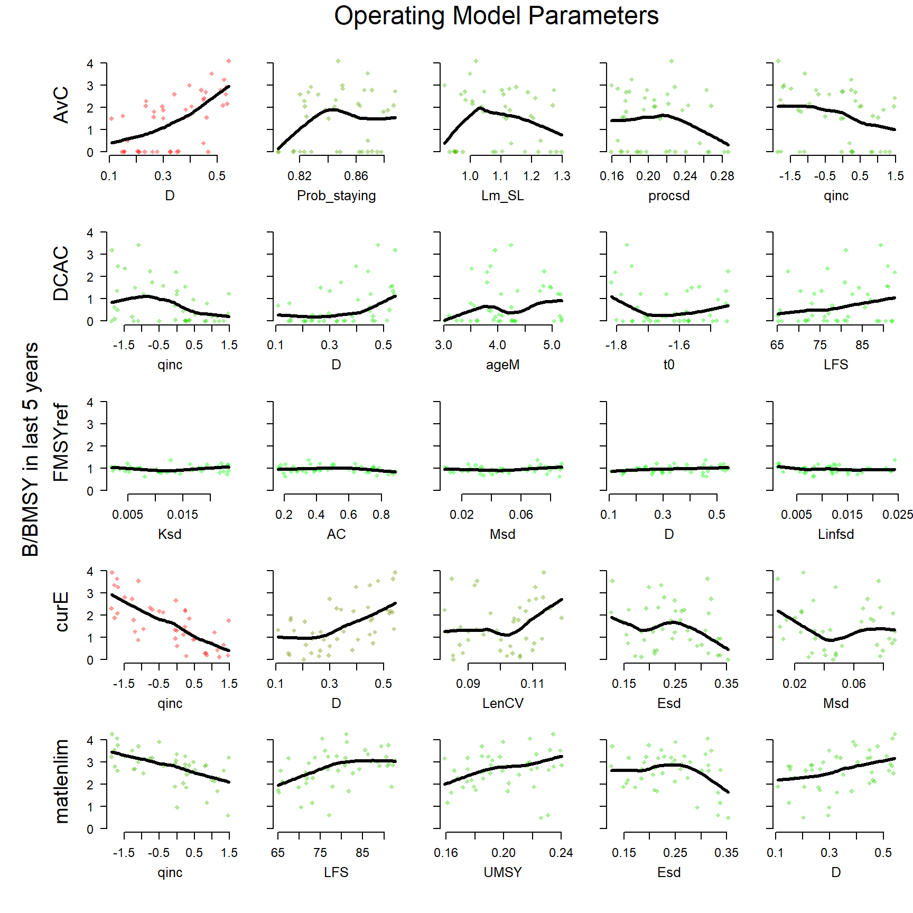
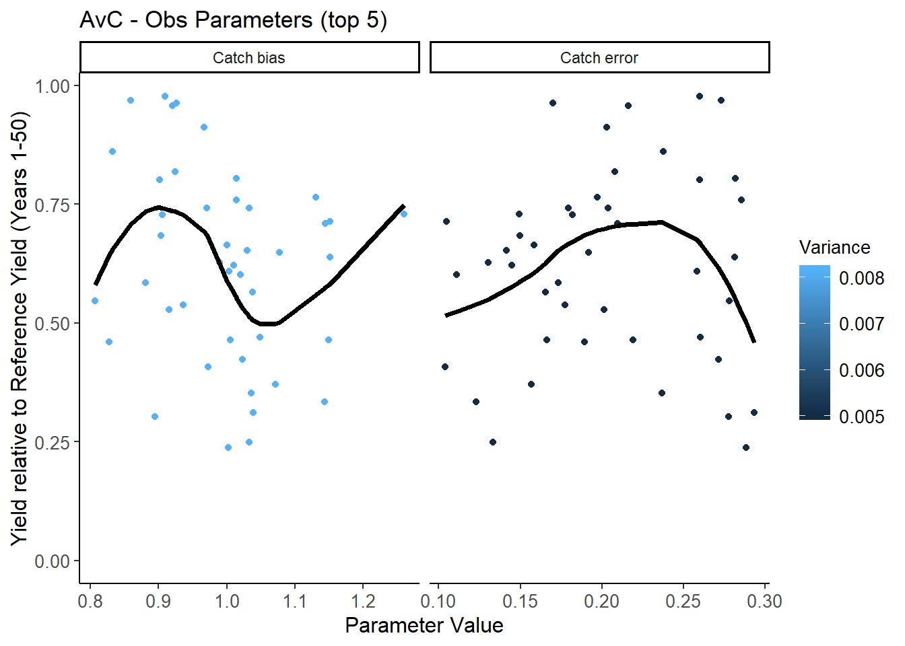
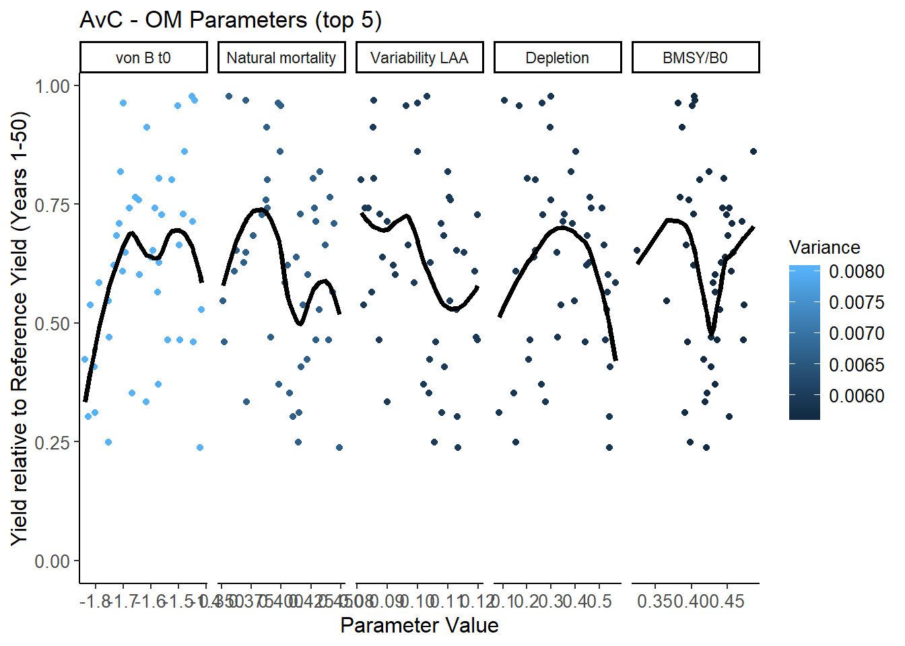
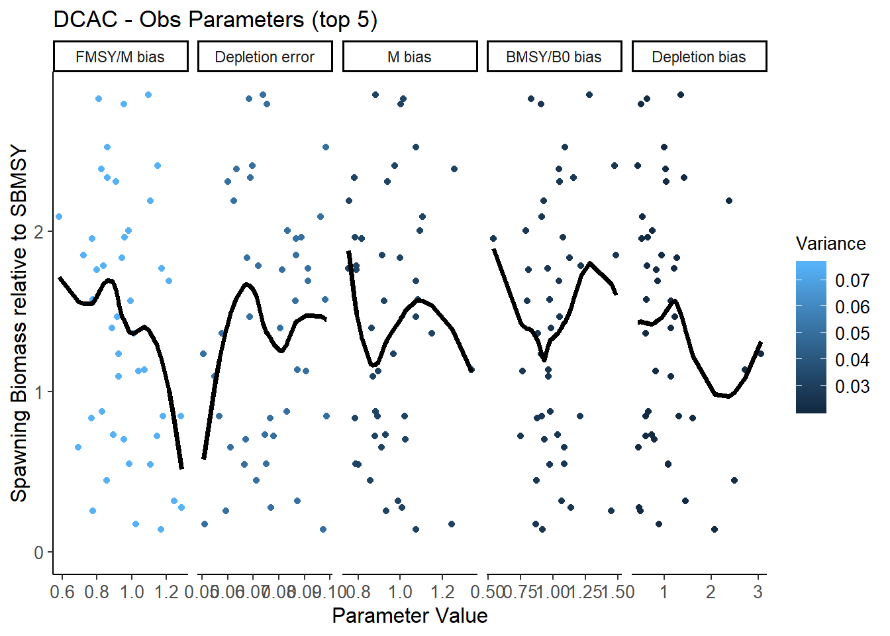
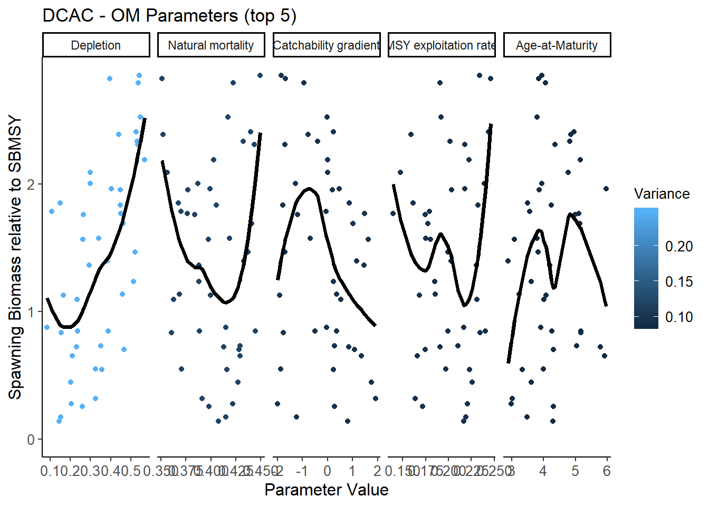
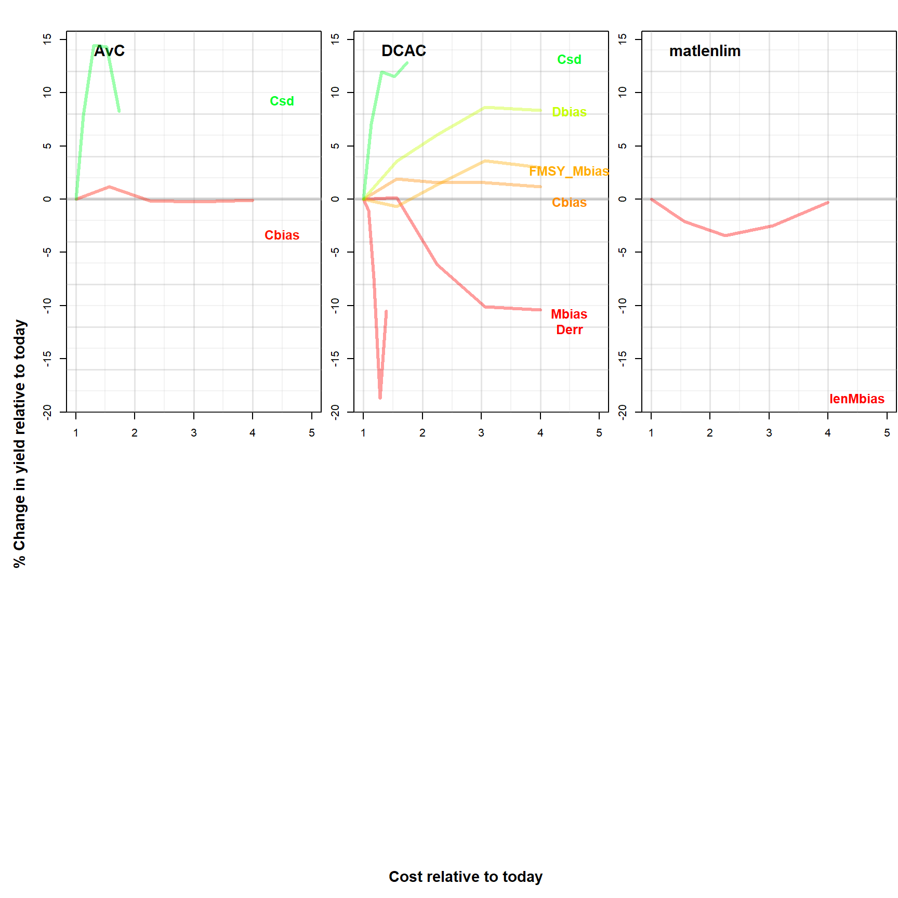

Chapter 16 Value of Information
The Value of Information (VOI) functions have been designed to explore the sensitivity of the performance of the Management Procedures to variability in the observation processes and operating model parameters.
There are several VOI functions in DLMtool.
The VOI function generates two plots, one corresponding to the operating model parameters, and the other to the observation model parameters, showing the gradient in long-term yield with respect to the individual parameters:
VOI(MSE)
## [[1]]
## MP 1 2 3 4 5 6
## 1 AvC Asp SSBMSY M LenCV L5 FMSY_M
## 2 21.01 20.91 20.56 20.41 19.43 17.77
## 3 DCAC LenCV L5 Vmaxlen M BMSY_B0 Asp
## 4 29.35 28.68 25.97 24.84 24.73 24.54
## 5 FMSYref hs SSB0 LFS LenCV M Asp
## 6 4.47 4.22 3.94 3.94 3.69 3.62
## 7 curE AC K SSB0 qinc procmu procsd
## 8 16.84 16.64 15.03 15 14.6 14.6
## 9 matlenlim qinc SSBMSY MGT maxlen D K
## 10 22.98 20.99 20.37 20.24 19.8 18.69
## 11 MRreal K qinc AC D procmu procsd
## 12 15.16 15.13 14.77 13.75 12.43 12.43
##
## [[2]]
## MP 1 2 3 4 5 6
## 1 AvC Cbias Csd
## 2 25.22 17.03
## 3 DCAC Cbias Csd Derr Mbias FMSY_Mbias Dbias
## 4 38.27 23.16 21.37 18.39 14.59 12.7
## 5 FMSYref <NA>
## 6 <NA>
## 7 curE <NA>
## 8 <NA>
## 9 matlenlim lenMbias
## 10 19.65
## 11 MRreal <NA>
## 12 <NA>The VOIplot function shows something similar, but has an argument to specify either the Observation or Operating Model parameters:
# Observation Parameters
VOIplot(MSE, nMP=5)
# OM Parameters
VOIplot(MSE, Par="OM", nMP=5)
By default, the VOIplot function only shows the four Management Procedures with the greatest sensitivity. Here we’ve made it show all five methods using the nMP argument.
In this example we can see that the Fratio method is particularly sensitive to bias in the current estimate of abundance, and over-estimates of the current abundance result in very low long-term yield (probably do to collapse of the stock). The DCAC method appears most sensitive to bias in the estimated catch.
We can also use the VOIplot function to look at the sensitivity with respect to the final biomass by specifying the YVar argument:
VOIplot(MSE, Par="OM", nMP=5, YVar="B")
This result shows, perhaps unsurprisingly, that the final biomass is often strongly sensitive to the initial depletion, particularly for the DCAC and matlenlim methods.
The VOIplot2 function is an updated version of VOIplot that uses the PM functions and plots the Value of Information for a single MP:
VOIplot2(MSE)
VOIplot2(MSE, type="OM")
and with a different MP and performance metric:
VOIplot2(MSE, MP="DCAC", PM="P100")
VOIplot2(MSE, MP="DCAC", type="OM", PM="P100")
The VOI2 function relates the operating model parameters and parameters of the observation model to relative yield (yield over last 5 years of projection relative to a ‘best F’ scenario that maximizes yield.
VOI2(MSE)
VOI2 assumes that relative cost for each type of improvement in data is linearly related to the number of samples (e.g. nCAAobs) or square function of improved precision and bias e.g.: relative \(\text{cost}= \frac{1}{(\text{newCV}/\text{oldCV})^2}\)
The VOI features of DLMtool are continuing to be developed and more VOI functions will be added soon.